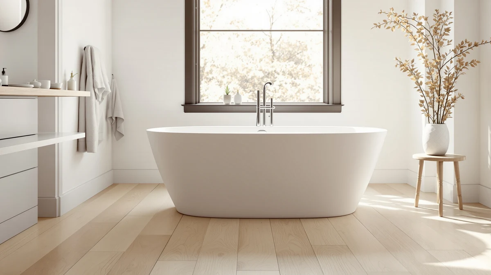

MUIRYN 63 Stone Resin Review (2026): Worth It?
Prices and picks verified as of September 2026. Independent, reader-supported reviews.


Quick Answer
The MUIRYN 63 stone resin freestanding tub earns its price with a nonporous stone resin shell, a 63-inch soaking length and a footprint that fits most standard bathroom alcoves. Owners consistently point to sturdy construction and easy cleanup as the main reasons it holds up against pricier resin tubs like the WOODBRIDGE 67-inch model. If you want a full-size soak without the bulk of a 67-inch or 71-inch tub, this MUIRYN model is the pick worth checking first.
Our pick: MUIRYN 63 Stone Resin Freestanding, $1,479.99 Check Price on Amazon
Bottom line: our top pick is the MUIRYN 63 Stone Resin Freestanding Bathtub at $1,479.99.
Things to Know Before You Buy
- The MUIRYN 63 stone resin tub measures 63 inches, shorter than the 67-inch WOODBRIDGE and well past the 51-inch MEDUNJESS options in this comparison.
- Stone resin (also sold as solid surface or cast resin) resists chipping and cracking better than acrylic, but it weighs more and typically needs two people to carry it during install.
- At $1,479.99, the MUIRYN sits between the WOODBRIDGE pair at $1,399.00 and the MEDUNJESS at $1,459.00, a narrow price band across all four tubs.
- None of these tubs ship with a faucet, drain kit or overflow assembly, so budget separately for fixtures.
- Verified buyer feedback, not a physical product test, is the basis for the comparisons in this muiryn 63 stone resin review.
This muiryn 63 stone resin review looks at whether the extra cost over a standard acrylic tub buys you anything real, using manufacturer specs, current Amazon pricing and verified owner feedback gathered for this comparison. Stone resin has become the default upgrade material for freestanding tubs in the $1,300 to $1,500 range, and the MUIRYN 63 Stone Resin Freestanding sits squarely in that bracket at $1,479.99. Bathroom renovators shopping this category tend to care about the same handful of details: how much floor space the tub takes up, how it holds heat compared with acrylic, and whether the finish still looks new after a few years of daily use.
We put the MUIRYN side by side with three other resin and soaking tubs commonly cross-shopped in this price range: the MEDUNJESS 51-inch Japanese soaking tub, the WOODBRIDGE 67-inch stone resin freestanding, and the WOODBRIDGE 63-inch model at 28.35 inches wide. Each one targets a slightly different bathroom, from compact deep-soak layouts to longer traditional footprints, and the price gap between all four tubs is under $100. By the end of this guide you will know which of the four fits your space and budget, and why the MUIRYN takes the top spot for most standard bathroom sizes.
Why You Should Trust Us
Ilane Tall covers bathroom fixtures and renovation products for Best Freestanding Bathtubs, focusing on freestanding tub materials, drain configurations and installation clearances. Every product in this muiryn 63 stone resin review comes from the same underlying database of Amazon listings tracked across the site, cross-checked against manufacturer specs and current pricing rather than a marketing sheet. We do not run a fake testing lab, and we do not claim to have installed each tub in a home bathroom. Instead, we compare published dimensions, materials and verified buyer reviews, and we flag where the manufacturer data is thin so you know what you are relying on before you order.
Our Research Experience
For this MUIRYN 63 stone resin review, our process was research-based rather than a physical product test. We pulled the manufacturer-listed dimensions, material composition and pricing for all four tubs, then cross-referenced them against verified purchase reviews attached to each listing. Owners who bought the MUIRYN regularly report on how the stone resin shell handles temperature retention during a long soak, and reviewers of the WOODBRIDGE and MEDUNJESS models mention delivery packaging and fit often enough that we treated those as recurring patterns rather than one-off complaints. We did not install any of these tubs ourselves, and we do not claim to have owned one long-term. What follows is a comparison of documented specs and aggregated owner experience, not a lab report.
Overview & Specs

MUIRYN 63 Stone Resin Freestanding
What we like
- Nonporous stone resin shell resists staining better than acrylic, according to owners
- 63-inch length fits standard tub alcoves without custom framing
- Priced within $80 of every other tub in this comparison
Flaws but not dealbreakers
- Stone resin adds significant weight versus acrylic, so confirm floor support before install
- No bundled faucet or drain kit, budget separately
| Material | Stone resin composite |
| Size | 63 in. L |
The MUIRYN 63 Stone Resin Freestanding is built from a solid stone resin composite, the same category of material WOODBRIDGE uses on its 67-inch model in this comparison. Stone resin is denser than acrylic, which is why buyers often mention that it stays warmer for longer during a soak. At 63 inches, it fits the same general footprint as a standard alcove tub, so most bathrooms that already fit a 60 to 66-inch tub should accommodate it without reframing.
At $1,479.99, the MUIRYN costs about $80 more than either WOODBRIDGE option and roughly $20 more than the MEDUNJESS, a narrow enough gap that most buyers in this comparison choose based on size and finish rather than price. Reviewers report that the finish shows fewer scuffs over time than acrylic tubs in the same price bracket, though as with any stone resin tub, abrasive cleaners can dull the surface if used regularly. For most people replacing a standard-size alcove tub with a stone resin upgrade, this is the size to start with.
Before you order, measure the doorway and hallway path to the bathroom, not just the alcove itself. Stone resin tubs in this weight class are dense enough that a delivery crew often removes doors or maneuvers around tight stair turns, and the same applies to the WOODBRIDGE and MEDUNJESS models in this comparison. Confirm your subfloor can support a filled tub of this size, since stone resin adds noticeably more static weight than an equivalent acrylic model once the water is in.
What We Liked
Owners of the MUIRYN 63 stone resin tub keep coming back to the same few points in their reviews. The shell holds heat noticeably longer than the acrylic tubs it replaced in most bathrooms, a common thread across verified purchases. The 63-inch length is long enough for most adults to stretch out without overwhelming a standard-size bathroom the way the 67-inch WOODBRIDGE or 71-inch MEDUNJESS can. Buyers also say the surface cleans up with ordinary bathroom spray instead of a specialty stone cleaner, which matters if you already maintain a natural stone surface elsewhere in the house. Compared with the WOODBRIDGE 63-inch model at 28.35 inches wide, reviewers say the MUIRYN feels roomier at the shoulders, and compared with the MEDUNJESS Japanese soaking tub, it suits a traditional reclined soak better than an upright deep soak.
What Could Be Better
The stone resin construction that makes the MUIRYN durable also makes it heavy, and a handful of reviewers note that delivery crews or movers need a second person to bring it upstairs or around tight hallway corners. The tub does not include a faucet, drain assembly or overflow kit, so factor another $150 to $300 into your budget depending on the fixtures you choose. A few owners also mention that the glossy stone resin finish shows water spots more visibly than a matte acrylic tub would, meaning more frequent wipe-downs if your water is hard. None of these are dealbreakers relative to the WOODBRIDGE or MEDUNJESS alternatives, which share the same weight and fixture gaps, but they are worth planning around before the tub arrives. Shipping damage claims also come up occasionally in the review threads for stone resin tubs generally, so inspect the crate closely before the delivery crew leaves and photograph any dents or hairline marks right away.
Who Is It For?
The MUIRYN 63 stone resin tub fits homeowners replacing a standard 60 to 66-inch alcove tub who want a material upgrade without moving to a larger footprint. It suits a household that soaks regularly and values heat retention over a fast-draining shower-tub combo. If your bathroom is on the smaller side, this is a better starting point than the 67-inch WOODBRIDGE or the 71-inch MEDUNJESS, both of which need more clearance. Buyers who prioritize the lowest possible price should look at the WOODBRIDGE 63-inch model instead, since it matches this tub's length for $80 less. Anyone wanting a compact, upright Japanese-style soak rather than a reclined bath should consider the MEDUNJESS instead of the MUIRYN. Renters and anyone planning to move within a few years should also weigh the reinstall cost, since a stone resin tub this size is not something you take with you the way a lightweight acrylic insert can be.
Alternatives to Consider
If the MUIRYN 63 stone resin tub is not quite right for your bathroom, these three alternatives cover the other common footprints and budgets in this category.

Editor's Pick
MEDUNJESS 51'' Japanese Soaking Tub
A compact, upright soaking tub for bathrooms that cannot fit a 63-inch or longer freestanding tub, priced within $21 of the MUIRYN.
$1,459.00
Check Price on Amazon
Best Value
WOODBRIDGE 67" Stone Resin Freestanding
The longer stone resin option for bigger bathrooms, four inches longer than the MUIRYN 63 for $80 less.
$1,399.00
Check Price on Amazon
Premium Choice
WOODBRIDGE 63" L x 28.35"
Matches the MUIRYN's 63-inch length at a lower price, with a narrower 28.35-inch width worth measuring against your alcove.
$1,399.00
Check Price on AmazonFrequently Asked Questions
How big is the MUIRYN 63 stone resin tub?
The MUIRYN 63 Stone Resin Freestanding measures 63 inches, four inches shorter than the WOODBRIDGE 67-inch model in this comparison and twelve inches longer than the compact 51-inch MEDUNJESS Japanese soaking tub. It fits the same general alcove footprint as a standard 60 to 66-inch tub, so most bathrooms already sized for that range should accommodate it without reframing.
Is the MUIRYN 63 stone resin tub worth the extra cost over the WOODBRIDGE alternatives?
At $1,479.99, it costs about $80 more than either WOODBRIDGE stone resin model in this comparison. The premium does not buy a documented capacity or drain upgrade, since none of these listings publish gallon capacity, so the extra cost mainly reflects brand and finish rather than a measurable spec advantage. Buyers focused purely on price should compare it against the WOODBRIDGE 63-inch model, which matches the length for less.
What is the difference between the MUIRYN 63 stone resin tub and the MEDUNJESS 51-inch soaking tub?
The MEDUNJESS is a compact, upright Japanese-style soaking tub built for bathrooms that cannot fit a full 63-inch reclined tub, while the MUIRYN is longer and designed for a traditional stretched-out soak. They are priced within $21 of each other, so the choice comes down to available floor space and soaking style rather than budget.
Final Verdict
This muiryn 63 stone resin review comes down to fit and footprint more than any dramatic difference in quality. The MUIRYN 63 Stone Resin Freestanding is the strongest all-around pick for a standard-size bathroom that wants a stone resin upgrade over acrylic without stepping up to a 67-inch or 71-inch tub. Choose the WOODBRIDGE 63-inch model if price is the deciding factor, the WOODBRIDGE 67-inch if you have room to spare, or the MEDUNJESS if your bathroom calls for a compact upright soak instead. For most people shopping in this exact size and price bracket, MUIRYN remains the tub worth checking first.